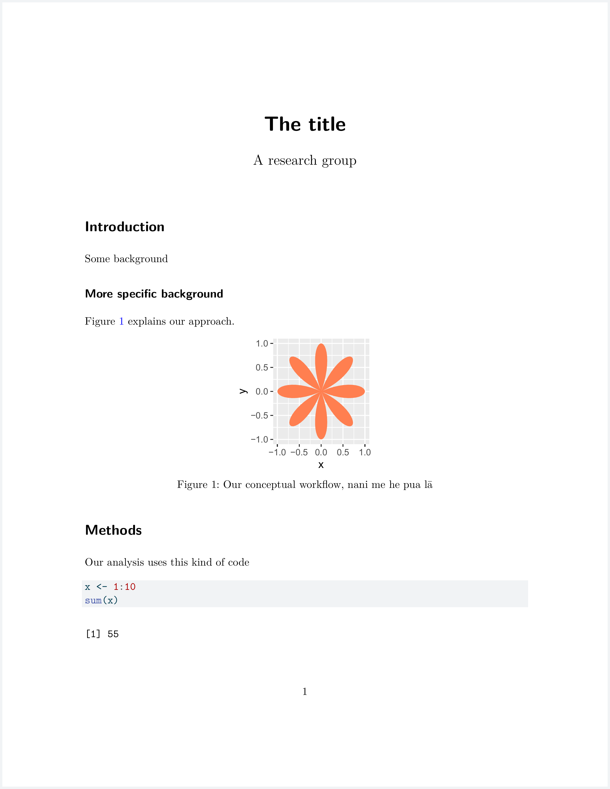
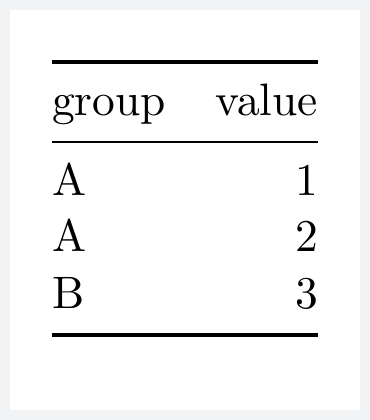

4 Dynamic documents with quarto
4.1 What is a dynamic document and how does quarto make it work?
Dynamic documents are those that respond to changes in our data or code by automatically updating to reflect those changes. With dynamic documents you no longer need to have code in one file, graphics in multiple files elsewhere, and then copy and paste everything into another document when actually writing a paper, a report, or notes. Everything lives in one file and the nicely formatted finished product is generated from that one file.
Quarto is the powerhouse that enables us to make these dynamic documents. Under the hood, quarto uses markdown, pandoc, and knitr to make all this possible. Quarto itself is not (just) an R package, so to seek help your best bet is the extensive documentation online. knitr is an R package, but the best way to learn about it is also its extensive documentation online. We will cover much of the markdown you need to know in the next section. Only if you go deep into customizing the appearance of your documents do you need to dive into pandoc. For now, rest assured that what these incredible tools allow you to do is convert your code, figures, and simply-formatted text into beautiful pdf, html, or (beautiful? maybe not) word documents.
It should be noted that quarto is the inheritor of Rmarkdown and pretty much everything on the web (or already in your head) about using Rmarkdown will apply to quarto as well.
4.2 Quick-start
Here is an example of a quarto document:
---
title: "The title"
author: A research group
format: pdf
---
```{r}
#| label: setup
#| include: false
library(dplyr)
library(tibble)
library(ggplot2)
```
# Introduction
Some background
## More specific background
@fig-concept explains our approach.
```{r}
#| label: fig-concept
#| echo: false
#| fig-width: 2
#| fig-height: 2
#| fig-cap: "Our conceptual workflow, nani me he pua lā"
dat_concept <- tibble(
rad = seq(0, 2 * pi, length.out = 200),
x = cos(rad) * cos(4 * rad),
y = sin(rad) * cos(4 * rad)
)
ggplot(dat_concept, aes(x, y)) +
geom_polygon(fill = "coral")
```
# Methods
Our analysis uses this kind of code
```{r}
#| label: step-01
x <- 1:10
sum(x)
```We can render that document into a pdf file that looks like this:
Pretty cool! But how does it all work. Here we go:
4.2.1 Rendering
Rendering is made simple by RStudio. When you have a quarto document open, you will see a “Render” button. Hit that button and the rendering magic happens for you! RStudio comes pre-loaded with the quarto software and its dependencies needed for rendering. Rendering will produce an actual pdf file, and a preview of that file will show up in the “Viewer” tab.

If you want more control over rendering you can also use the R function quarto_render from the package quarto. For example in the console you could run
library(quarto)
quarto_render("example_quarto.qmd")Have a look at ?quarto_render for all the arguments that let you control the specifics of how your document is rendered.
That’s rendering, but how does the actual quarto document work
4.2.2 YAML header
The first bit of the quarto document looked like this:
---
title: "The title"
author: A research group
format: pdf
---In between the --- is what’s called the YAML header. This specifies metadata about the document. For example, we want to make a pdf document with title “The title.” If we wanted to instead render an html document, all we need to do is change format: pdf to format: html.
YAML lets you provide a lot of information that customizes or even adds content (like a bibliography) to your document. Here is a non-exhaustive accounting of some YAML options.
4.2.3 Markdown syntax
Markdown is a markup language that lets you format text with simple plain text, meaning you can produce something fancy looking like different headers, lists, tables, with simple plain text characters like # and -. Alternative markup languages (like html or latex) require more laborious “markup” tags to achieve similar results to markdown, thus the attempt at a humors name for markdown. Here is an overview on markdown syntax.
4.2.3.1 General formatting
For italics, wrap text in a single asterisks *like this*; for bold, wrap text in double asterisks **like this**; and for italic bold, wrap text in triple asterisks ***like this***.
4.2.3.2 Headers
Markdown creates section headers with the hashtag: # is an H1 header, ## is an H2 header (sub-header), ### is an H3 header (sub-sub-header) and so on. You saw examples of these in the above example quarto document.
4.2.3.3 Lists
Bullet lists are generated with hyphens - like this:
- one item
- another itemWhich will be rendered as:
- one item
- another item
Numbered lists are generated with numbers:
1. first
1. secondgets rendered to
- first
- second
Note: you don’t need to use correct numbering, markdown figures it out for you.
You can make hierarchical lists by tab indenting. This:
- one item
- one smaller thought
- and another
- another itemproduces this:
- one item
- one smaller thought
- and another
- another item
And this:
1. first
i. additionally
iii. and more
2. secondproduces this
- first
- additionally
- and more
- second
4.2.3.4 Hyperlinks and images
Those two items seem unrelated, but their markdown syntax is similar. You can link to a URL like this: [Our website](https://uhm-biostats.github.io/stat-mod/) which will produce formatted text like this:
Including an image looks almost the same. This:
will be rendered as this:

if you were to have that image file wao.png saved at the location img/data-intro.
You can also include an image from a URL:

4.2.3.5 Tables
Tables can be simply created with markdown like this:
|group | value|
|:-----|-----:|
|A | 1|
|A | 2|
|B | 3|which is in turn rendered as

4.2.4 Code
One of the most awesome things about quarto and Rmarkdown is that you can write code directly into the document and run it during the rendering process. We saw that in the example quarto document.
Code lives in “chunks” and chunks have many options that you can specify to determine how and if the code is run and presented. Those options were first defined by knitr and are not incorporated into quarto. See documentation here.
Code chunks get indicated with triple back tick marks: ``` and the language of the code in curly brackets ({r}, we will only be using R) like this from the example document:
```{r}
#| label: step-01
x <- 1:10
sum(x)
```eval(parse(text = q[ii[-c(1:2, length(ii))]]))[1] 55We see the result of the computation gets printed out below the code. But what is this all about:
#| label: step-01The #| is called a “hash pipe” (either the people who developed quarto are huge nerds who don’t know better, or they know exactly what they’re doing). The hash pipe is how we indicate code chunk options. A good habit to be in is always providing a label: to each code chunk. Some other options we’ve seen are include: which tells quarto if we want the code itself and its output to be printed in the rendered output; The default is true so include: false means run the code, but don’t print it. We also say echo: false which means don’t print the code, but do print the output. Other options we saw like fig-width: are for specifying details about how figures generated by code are displayed.
4.2.4.1 Figures and tables from code
That’s right! We can make figures with code and have them displayed in our rendered documents. One
We can also make markdown-formatted tables with help from the knitr package. Here’s an example
```{r}
#| label: table-example
library(knitr)
# make a simple data.frame
d <- data.frame(group = c("A", "A", "B"),
value = 1:3)
kable(d)
```which produces the markdown table that previously we made by hand:
|group | value|
|:-----|-----:|
|A | 1|
|A | 2|
|B | 3|and is in turn rendered as

4.2.4.2 Cross referencing
We often want to refer to an figure of table like “Figure 1 shows such and such. Table 3 shows the other thing.” To make the figure and table output of our code cross-referencable we need to use special labels inside the code chunks.
In the example quarto file we made a figure and then referenced it. To allow that, we used this special code chunk label:
cat(q[grep("label: fig-concept", q)])#| label: fig-conceptThe special part is that the label name starts with fig-. Then in our text we could cross reference the figure with the markdown code @fig-concept.
Tables are similar, but we use the special label tag tbl-. For example if we made a table in a code chunk with #| label: tbl-one_tab, we could then cross reference the table with @tbl-one_tab.
There is a lot more to learn about cross referencing (including in cases where we don’t make figures or tables with code) and you can read more here.
4.3 Now it’s your turn
In the previous chapter you produced an extensive R script with notes and code. Copy-paste and modify that big unruly R script into a nice qmd file and render it as a pdf. This pdf will be your own personal definitive R study guide and reference manual.